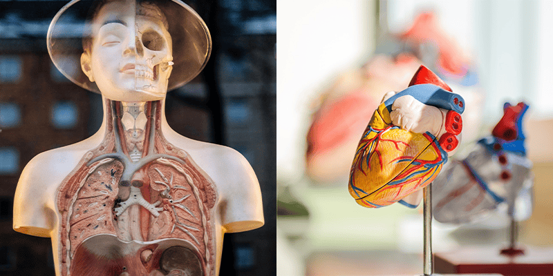

The Science of You

Dive into the fascinating world of biology and uncover what makes you unique. From DNA to the senses, The Science of You is all about exploring the amazing machine that is your body.
Perfect for curious minds who want to know how their bodies work!
Activities:
- Walk through a giant digestive system maze and see how food becomes energy.
- Test your reflexes, balance, and coordination with fun challenges.
- Extract and examine DNA in real-time in our mini biology lab.
- Interactive stations that explain your senses, brain, and muscles.
- Augmented reality experiences that let you “see inside” the human body.
- Fun quizzes and activities to learn about genetics and how we grow.